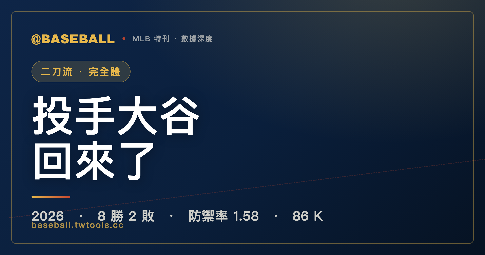

二刀流完全體：大谷翔平 2026，用 ERA 1.58 宣告投手回歸
截至 2026-06-25，大谷翔平（Shohei Ohtani）以 13 場先發投出防禦率 1.58、WHIP 0.90、86 次三振（9 局平均 9.72K），ERA 全聯盟排第二。打擊端 77 場 .295 打擊率、OPS .963，但全壘打僅 17 支，節奏遠低於 2024 的 54 轟。這是他術後第一個投打並行的完整賽季——過半數據告訴我們，他在投球上極度宰制，但兩條線都跑就意味著打擊火力要做出取捨。

MLB 特刊｜大谷翔平 2026 賽季
2024 年，大谷翔平（Shohei Ohtani）做了一件讓所有人目瞪口呆的事：整季一球沒投，打出棒球史上第一個單季 50 轟 50 盜，全票拿下 MVP。本站那篇特刊詳細記錄了整個過程，但那篇文章同時說清楚了一件本質性的事：那個「只有打者的大谷」，終究只是半個大谷。
那篇文章在最後寫下一句話：「當這個人健康、當投打二刀流完整運轉，他的上限到底在哪裡？」
2026 年，這個問句開始有了具體的答案輪廓。
大谷在 2023 年 9 月動了右手肘韌帶手術，整個 2024 賽季以指定打擊身分打球，交出了那份史上級的純打擊成績單。2025 年他帶著修復好的手肘重返投手丘，一邊磨感覺一邊管理負荷。到了 2026 年，道奇的輪值計畫與他的身體狀況同時到位——這才是他真正意義上第一次讓二刀流完整重新運轉的賽季。
截至 2026 年 6 月 25 日，例行賽已超過半程。這份成績單的樣本是打擊 77 場、投球 13 場先發，尚不是完整賽季的成就，但已有足夠的資訊可以說話。
這篇文章要把這份過半成績單，誠實地拆開來讀。 投球的極度宰制是真的，全壘打節奏的大幅下滑也是真的——這兩件事加在一起，才是「完整大谷」的真實樣貌，而不是其中任何一面的單獨放大。
在進入數字之前，值得先停下來想一件事：為什麼「投打俱佳」這四個字，在現代棒球裡幾乎等於不可能？
現代職業棒球的本質是「分工的極致專業化」。一名先發投手的整個身體與訓練週期，是圍繞著「每隔幾天爆發一次最大強度」打造的——他在登板前要養精蓄銳、登板後要進入長達數天的恢復期，肩膀與手肘承受的負荷是運動科學裡公認最容易累積傷害的部位之一。而一名每天上場的野手，需要的是「每天都能維持穩定輸出」的另一種身體節奏：每天進打擊籠調整揮棒、每天面對不同投手、每天在跑壘與守備中消耗。這兩套身體的需求，幾乎是互相牴觸的。要一個人同時把這兩件事都做到頂尖水準，等於要他的身體在「週期性最大爆發」與「每日穩定輸出」兩種模式之間反覆切換——而每一次切換，都在累積疲勞與受傷的風險。
這也是為什麼在分工日趨精細的當代，球團寧可把資源拆給兩個專家，也不太敢賭一個人扛兩份工作。專業化之所以成為主流，正因為它在統計上更安全、更可預期。大谷做的事，是逆著這整個趨勢走——而 2023 年那場手肘手術，恰恰就是這種逆行所付出的、最直接的代價。投球的負荷終究在他的手肘上留下了帳單。
所以 2024 到 2026 這條線，其實是一條「復健弧」。2024 年那篇特刊裡的大谷，是一個剛動完手肘手術、被迫只能打擊的版本——他用「半個自己」打出了 54 轟與史上第一個 50-50。那是一個在傷病陰影下、被剝奪了一半武器的賽季。而 2026 年的這份成績單，意義正在於：那條被切斷的線，重新接了回來。經過 2025 年一整季的重建與負荷管理，他在 2026 年第一次讓投與打同時運轉。讀懂這條弧，才讀得懂為什麼這份過半數據——即便長打下滑——仍然是一份比 2024 年「更完整」的成績單。
一、投手大谷回來了：ERA 1.58，全聯盟排第二
先看投球，因為這才是 2026 年這份成績單裡最醒目的那一行。
2026 年截至 6 月 25 日，大谷以先發投手身分繳出的數字如下——樣本為 13 場先發、79.2 局：
| 2026 投球成績（截至 6/25） | 數字 |
|---|---|
| 先發場次 GS | 13 |
| 投球局數 IP | 79.2 |
| 勝投 W | 8 |
| 敗投 L | 2 |
| 防禦率 ERA | 1.58 |
| WHIP | 0.90 |
| 三振 K | 86 |
| 保送 BB | 24 |
| 被安打 H | 48 |
| 每九局三振 K/9 | 9.72 |
逐一說明這幾個數字的含義。
ERA 1.58： 防禦率是先發投手最核心的指標之一，計算的是每投九局所承擔的責任失分數。1.58 這個數字，放在現代棒球裡屬於頂尖先發才能維持的水準。一整個賽季要守住 ERA 在 2.00 以下，在近年大聯盟平均得分環境偏高的情況下，難度相當高。大谷目前的 1.58，是在 79.2 局的樣本下交出的——不是幾局的小樣本，而是足以初步評估的份量。
WHIP 0.90： WHIP 計算的是「每局平均允許上壘人數」，被安打加保送除以總局數。0.90 代表大谷平均每局讓不到一個人上壘——頂尖先發投手的水準通常落在 1.00 至 1.20 之間，0.90 已進入聯盟頂端的範疇。這個數字說明大谷不只是靠三振撐起防禦率，他整體讓對手上壘的頻率就是比其他投手低。
K/9 達 9.72： 每九局三振數超過 9.7 個，幾乎是每局超過一次三振的節奏。這是一個能主動壓制打線、而非被動依賴守備的投球風格。13 場先發 86 次三振、79.2 局，換算下來平均每場先發約有 6.6 次三振。
那麼，ERA 1.58 放在全聯盟的先發投手裡，位置是什麼？
| 2026 ERA 榜（截至 6/25） | 排名 | 投手 | ERA |
|---|---|---|---|
| 1 | 雅各布・米斯歐羅斯基（Jacob Misiorowski） | 1.45 | |
| 大谷位置 | 2 | 大谷翔平（Shohei Ohtani） | 1.58 |
| 3 | 凱姆・施利特勒（Cam Schlittler） | 1.71 | |
| 4 | 克里斯托佛・桑切斯（Cristopher Sánchez） | 1.80 | |
| 5 | 蔡斯・伯恩斯（Chase Burns） | 2.00 | |
| 6 | 克里斯・賽爾（Chris Sale） | 2.14 | |
| 7 | 愛德華多・羅德里格斯（Eduardo Rodriguez） | 2.27 | |
| 8 | 山本由伸（Yoshinobu Yamamoto） | 2.65 |
大谷排全聯盟第二。壓在他頭上的那一位——米斯歐羅斯基——是一位新秀投手，ERA 1.45。坦白說，這個排名就是如此：大谷並非榜首，他距離第一名差了 0.13 個 ERA，而不是零距離。這篇文章不打算把他說成「全聯盟最強投手」，因為數字沒有這樣說。但 ERA 1.58、全聯盟第二，這個位置是真實的，而且必須加上一個脈絡：榜單上其他所有投手，都不需要在非投球日坐進打擊區擔任先發。 他們只需要專注於投球、為下一次登板做準備，而大谷同時還在打擊端每天出現。這個差異不能忽略。
再從投手的局數產出來看。13 場先發、79.2 局，平均每場先發大約投 6.1 局多。現代先發投手的使用趨勢越來越短，許多球隊的先發投手平均每場不超過 5、6 局，大谷的局數產出在當前環境下屬於主力先發的正常範疇。值得注意的是，13 場先發裡有兩場達到 7 局（5 月 5 日對太空人、5 月 13 日對巨人），顯示他的耐力與體能管理都在正軌上。
把勝敗也拆開看，更能理解這份宰制的份量。13 場先發、8 勝 2 敗，勝率達 0.8——在先發投手裡，這是極高的比值。更重要的是責任失分的分布：在 79.2 局裡，他多場先發是零責失（守護者、藍鳥、巨人兩度、教士、響尾蛇等），亂流則集中在六月中那兩場（海盜失 3 分、光芒失 4 分）。換句話說，他的 ERA 1.58 不是「每場都失一兩分、平均壓低」的那種穩定，而是「多數場次接近完封、少數場次集中失分」的形態。這種分布對球隊其實更有利——因為一個投手能頻繁交出零失分或一分以內的先發，等於頻繁地把「贏球」這件事直接握在自己手裡。
K/9 達 9.72 這個數字，在這個脈絡裡也更有意義。它代表大谷不是靠「讓打者打成軟弱滾地球、交給守備處理」的方式壓制——那種投手的防禦率容易受守備與運氣波動影響；他是靠主動製造三振，把出局數直接掌握在自己手上。86 次三振對上 24 次保送，三振保送比約 3.6 比 1，這個比值說明他在「壓制」與「控球」之間取得了相當好的平衡：既能搶三振，又沒有把保送送得太兇。一個能同時做到高三振率與低保送率的投手，本來就是稀有的；而大谷是在每隔幾天還要打擊的負荷下做到的。
整體而言，投球這端的數字，是 2026 年過半最強烈的訊號：手術後重返的投手大谷，不是以「還不錯的修復版本」回來的，而是以接近巔峰的競爭力回來的。
二、打擊成績單：OPS .963 依然頂尖，但全壘打節奏遠不如 2024
看完投球，翻到打擊這一面。
大谷 2026 年打擊端截至 6 月 25 日的完整成績（樣本：77 場）：
| 2026 打擊成績（截至 6/25） | 數字 |
|---|---|
| 出賽 G | 77 |
| 打席 PA | 340 |
| 打數 AB | 275 |
| 安打 H | 81 |
| 二壘打 2B | 15 |
| 全壘打 HR | 17 |
| 打點 RBI | 46 |
| 得分 R | 56 |
| 四壞 BB | 54 |
| 三振 SO | 78 |
| 盜壘 SB | 6 |
| 打擊率 AVG | .295 |
| 上壘率 OBP | .414 |
| 長打率 SLG | .549 |
| OPS | .963 |
先說好的地方。OPS .963，在全聯盟所有打者裡毫無疑問屬於頂尖水準。上壘率 .414 說明他的選球極為精準——77 場比賽走了 54 個四壞球，平均每 6.3 個打席就有一次保送，這不是靠運氣達成的，而是系統性的好球帶辨識力。打擊率 .295 也是紮實的數字，意味著他每 100 個打數大約敲出 30 支安打。長打率 .549 代表他的長打能力沒有消失，雙殺打（二壘打）方面的 15 支也不算少。
但全壘打這個數字，需要誠實地放進脈絡。
77 場、17 轟。換算成每 162 場的節奏，大約是 36 支全壘打左右的步調。這不是一個弱打者的數字，一個完整賽季 36 轟在大聯盟絕對是主力強打的等級。但把它跟 2024 年的 54 轟對比，落差就出現了： 2024 年他整季 159 場打出 54 轟，平均每場約 0.34 轟的頻率；2026 年到目前為止每場約 0.22 轟的頻率。節奏下降了大約三成五。
這個落差怎麼解釋？答案不複雜。2024 年的大谷沒有投球，所有的體能、準備與專注力，全數集中在打擊上——那是他用「完整自己的一半」做到的事。2026 年他同時兼顧兩端，每隔幾天就要主投一場、登板日前後需要不同的調整模式。要求他在這種情況下維持 2024 年的全壘打產出，就像要求一個人在雙手各提一個重物的情況下，單手舉出跟空手時相同的重量——這道理很直觀，但它就是不容迴避的現實。
現在把 17 轟放進全聯盟的全壘打榜，看看他的排位：
| 2026 全壘打榜（截至 6/25） | 排名 | 球員 | HR |
|---|---|---|---|
| 1 | 凱爾・舒瓦伯（Kyle Schwarber） | 29 | |
| 2 | 喬丹・艾瓦雷茲（Yordan Alvarez） | 25 | |
| 2 | 拜倫・巴克斯頓（Byron Buxton） | 25 | |
| 4 | 班・萊斯（Ben Rice） | 22 | |
| 5 | 亨特・古德曼（Hunter Goodman） | 21 | |
| 6 | 科爾森・蒙哥馬利（Colson Montgomery） | 20 | |
| 6 | 村上宗隆（Munetaka Murakami） | 20 | |
| 6 | 馬特・奧爾森（Matt Olson） | 20 | |
| 6 | 詹姆斯・伍德（James Wood） | 20 | |
| 大谷位置 | — | 大谷翔平（Shohei Ohtani） | 17 |
目前大谷的 17 轟，排在榜單外。凱爾・舒瓦伯（Kyle Schwarber）以 29 轟領跑，比大谷多了 12 支。就算按現有節奏推算到賽季末，大谷的全壘打也不會觸及榜首的位置。
這是誠實的讀法：2026 年的大谷，打擊端依然強悍，但他已不再是全壘打的主要競爭者。 這不代表他退步了，而是代表他的精力重新分配了。如果你衡量一個「二刀流球員」的方式，是把他跟「純打者排行榜」做比較，那這個比較本來就是錯誤的框架。
這裡有一個矛盾，值得正面講清楚，因為它正是這份成績單最容易被誤讀的地方。許多人對大谷有一種潛意識的期待：既然 2026 年的他「比 2024 年更完整」，那他在每一項上都應該更強——投球回來了，打擊至少也該維持甚至更好。但數字說的恰恰相反：他的打擊長打火力，相較 2024 年明顯下滑了。 2024 那年他整季 54 轟、長打率高得驚人，是因為他把全部能量都灌進打擊那一條線；2026 年他把同一份能量拆成兩半，分一半去投球，打擊端能拿出的長打自然就少了。17 轟（過半）、約每場 0.22 發的節奏，誠實地反映了這個取捨。
換句話說，「更完整」與「每一項都更強」是兩回事。完整指的是「兩條線同時運轉」，而不是「兩條線都各自破頂」。2026 年的大谷，是用打擊長打的一部分產出，換來了投手丘上的那份宰制。這個交換在球隊層面幾乎肯定划算——但在「他的全壘打數字」這個單一維度上，它就是一筆實實在在的扣減。不去承認這筆扣減，等於沒看懂二刀流的真正代價。
三、逐場先發全紀錄：13 場投球的節奏與起伏
把 13 場先發全部攤開，比看統計數字更能理解大谷這個賽季的投球弧線——哪些場次主宰了對手，哪些場次遇到了亂流，又如何從低潮中拉回來：
| 2026 先發投球逐場紀錄 | 日期 | 對手 | IP | ER | K | H | BB | 勝敗 |
|---|---|---|---|---|---|---|---|---|
| 開幕戰 | 2026-03-31 | 克里夫蘭守護者（Cleveland Guardians） | 6.0 | 0 | 6 | 1 | 3 | W |
| 2026-04-08 | 多倫多藍鳥（Toronto Blue Jays） | 6.0 | 0 | 2 | 4 | 1 | — | |
| 2026-04-15 | 紐約大都會（New York Mets） | 6.0 | 1 | 10 | 2 | 2 | W | |
| 2026-04-22 | 舊金山巨人（San Francisco Giants） | 6.0 | 0 | 7 | 5 | 0 | — | |
| 2026-04-28 | 邁阿密馬林魚（Miami Marlins） | 6.0 | 1 | 9 | 5 | 3 | L | |
| 7 局場次 | 2026-05-05 | 休士頓太空人（Houston Astros） | 7.0 | 2 | 8 | 4 | 0 | L |
| 7 局場次 | 2026-05-13 | 舊金山巨人（San Francisco Giants） | 7.0 | 0 | 8 | 4 | 2 | W |
| 2026-05-20 | 聖地牙哥教士（San Diego Padres） | 5.0 | 0 | 4 | 3 | 2 | W | |
| 零被安打 | 2026-05-27 | 科羅拉多落磯（Colorado Rockies） | 6.0 | 1 | 7 | 0 | 4 | W |
| 2026-06-03 | 亞利桑那響尾蛇（Arizona Diamondbacks） | 6.0 | 0 | 6 | 2 | 1 | W | |
| 2026-06-10 | 匹茲堡海盜（Pittsburgh Pirates） | 6.2 | 3 | 6 | 6 | 3 | — | |
| 2026-06-17 | 坦帕灣光芒（Tampa Bay Rays） | 6.0 | 4 | 5 | 7 | 1 | W | |
| 2026-06-24 | 明尼蘇達雙城（Minnesota Twins） | 6.0 | 2 | 8 | 5 | 2 | W |
從這份逐場記錄，可以整理出幾條清楚的脈絡：
開幕戰立即宣告（3/31 對守護者）： 6 局僅被安打 1 支、零失分、6 次三振。這場比賽意義不在數字本身，而在於它傳遞的訊號——大谷沒有試探性地「小心回歸」，他第一場就以宰制型的投球姿態重返。球威在，控球在，而且他選擇直接壓制，沒有保守應對。
單場三振最多（4/15 對大都會）： 六局 10 次三振是 13 場先發的單場最高，僅失 1 分、只被打 2 支安打。10 個三振幾乎代表每隔一個出局就有一次三振，對一支同樣具備競爭力的球隊打出這樣的數字，說明他的球品仍在可以主動壓制打線的層次。
零被安打場次（5/27 對落磯）： 六局無被安打（0 H）是這 13 場裡視覺上最突出的一場，但必須同時讀進去的是：他保送了 4 人，而且自己承擔了 1 分失分。零安打但有保送，代表控球這天不在最佳狀態，他靠著在關鍵時刻三振打者（7 次）沒讓局面失控，最後帶走勝投。這場同時展示了他的強項（壓制打者）與弱點（那天的走人率偏高）。
兩場最長局數（5/5 對太空人、5/13 對巨人）： 兩場都投了 7 局，是整個賽季裡最長的登板。對太空人那場失 2 分、拿到敗投；對巨人那場零失分、拿下勝投。這兩場擺在一起看，說明他具備撐過 7 局的體能條件，但對手的強度確實影響結果——太空人是聯盟中等以上的打線，大谷在那場吃了虧；巨人相對弱一些，他就完全壓制了。
六月的亂流（6/10 對海盜、6/17 對光芒）： 這是 13 場先發裡最不理想的連續兩場。對海盜 6.2 局失 3 分、被打 6 支安打；對光芒 6 局失 4 分、被打 7 支安打。兩場合計失 7 分，拖高了整體 ERA。但值得注意的是，光芒那場雖然被打了 7 支安打、失了 4 分，大谷仍然拿到勝投——代表打線幫他把分差守住了。亂流存在，但沒有完全失控。
隨後立即穩回（6/24 對雙城）： 光芒那場亂流後的下一次登板，大谷對雙城投出 6 局 8 次三振、失 2 分的成績，帶走勝投。這個「亂流之後的恢復」是觀察投手心理韌性與球威持續性的重要訊號——他沒有讓低迷場次在下一次登板留下陰影。
13 場先發的整體輪廓就是這樣：前期壓制明顯，中期穩定，六月中有兩場亂流，六月底立刻回穩。以 ERA 1.58 來說，這份 game log 說明他的高峰極度宰制，而低谷還在可管理的範圍內。
四、球隊戰績與大谷在道奇的位置
大谷不是在真空裡打球的。他的投打兩端都對洛杉磯道奇（Los Angeles Dodgers）的賽季有直接影響，而這支球隊截至 6 月 25 日的戰績同樣值得放進來讀：
| 洛杉磯道奇 2026 戰績（截至 6/25） | 數字 |
|---|---|
| 勝場 W | 52 |
| 敗場 L | 29 |
| 勝率 PCT | .642 |
| 分區 | 國聯西區（NL West） |
| 分區排名 | 第一 |
52 勝 29 敗、勝率 .642，穩居國聯西區第一。若以 162 場制推算，這個節奏到賽季末大約是 104 勝的水準——放在任何一個賽季都是強隊的表現。
道奇這支球隊的深度和資源在聯盟裡屬於頂端，不能把球隊成績完全歸因於大谷一人。但大谷在其中扮演的角色確實是雙重的：他的投球日，道奇等於動用了聯盟第二低 ERA 的先發；他的打擊日，道奇的打線有一個 OPS 將近 .963 的中心棒次在。這種雙重貢獻在聯盟裡沒有其他球員能複製。
2023 年大谷以 10 年 7 億美元的合約加盟道奇，是當時職業運動史上最高的合約金額。那個合約簽下去的其中一個核心邏輯，就是道奇認為健康的大谷可以同時在投打兩端提供頂端貢獻。2026 年過半，合約那個假設正在被驗證——至少目前看來，驗證的結果是正面的。
五、「二刀流的代價」與「完整大谷的樣貌」
讀到這裡，2026 年過半的大谷翔平在數字上的輪廓已經清楚。這一節嘗試把幾條不同的線，放在一起誠實地整理。
第一件事：投球的回歸是真實的，而且是頂尖水準的回歸。
ERA 1.58、WHIP 0.90、K/9 為 9.72、全聯盟排第二——這些不是「還不錯」的數字，而是「聯盟前段」的數字。他在 13 場先發裡拿到 8 場勝投，只有 2 敗，勝率達到 0.8，這個比值在先發投手裡屬於高勝率。對一個剛從手肘手術完全恢復、同時還兼顧打擊的球員來說，這樣的投球成績是超出保守預期的。
第二件事：打擊依然是頂尖打者的水準，但全壘打產出明顯收斂。
OPS .963、打擊率 .295、上壘率 .414，這三個數字放在聯盟全體打者裡都在前段。打擊沒有崩潰，也沒有滑落到平庸——但全壘打 17 支、節奏約每場 0.22 轟，與 2024 年的每場 0.34 轟相比，確實下降了三分之一以上。這是真實的落差，不是統計的雜訊。
第三件事：這兩件事加在一起，就是「二刀流的代價」。
當一個球員決定同時擔任頂尖先發投手與主力打者，他能在打擊端輸出多少火力，必然受到投球負擔的制約。2024 年的 54 轟，是把所有能量都灌進打擊的結果；2026 年的 17 轟（過半），是把能量分成兩半之後，打擊端能拿出的份額。這不是衰退，這是分配。
有一種對大谷翔平常見的錯誤期待，是認為「完整的大谷應該比『只打擊的大谷』更強」——就好像二刀流會在投打兩端同時創造額外的加乘，讓他在每件事上都比只做那件事的專家更強。這個期待在直覺上很誘人，但在現實裡站不住腳。精力、恢復、注意力這些資源是有上限的。「完整的大谷」不代表「全壘打更多且 ERA 更低」，而代表「一個人同時在兩條線上都達到頂尖水準」。目前的 2026 年，投球頂尖、打擊強悍但長打收斂，這就是那個「完整大谷」實際的樣貌，而不是想像中的無敵版本。
第四件事：這份成績單是賽季過半的快照，不是完整的賽季評價。
77 場打擊、13 場先發，樣本已有一定份量，但後半賽季還有大量的比賽要打。有幾件事值得繼續觀察：投球局數的累積是否會影響下半賽季的 ERA；打擊的全壘打節奏在氣溫與球場條件轉換後是否有變化；以及道奇在進入季後賽追逐的關鍵時段，如何分配大谷的登板間隔與打擊負荷。
在賽末或季後賽之前，把「2026 年大谷」當成已完成的故事來讀，都太早了。
但有一個問題，2026 年的過半成績已經給了一個足夠清晰的初步回答：
2024 年的特刊結尾問：「當投打二刀流完整運轉，他的上限到底在哪裡？」
2026 年過半的答案是：他可以同時以全聯盟第二低的 ERA 主宰投手丘，並在打擊端維持 OPS 將近 1.000 的水準——只是全壘打的部分，必須為此讓路。這個版本的大谷，比「只打擊」時的長打少，但比任何一個只有投球或只有打擊的球員，都多了一整個維度。
某種程度上，這才是「大谷翔平為什麼不凡」這個問題真正的答案——不是 54 轟，不是零失分的開幕戰，而是他能讓兩件本來就很難做好的事同時在頂端運轉，哪怕每件事都不得不為對方讓出一部分空間。這本身，在棒球的歷史裡就已經是沒有先例的事。
回到 2024 與 2026 這條線的兩端，會看到一個耐人尋味的對照。2024 年的大谷，是被傷病剝奪了一半武器、卻把剩下的那一半推到極限的版本——他用「只能打擊」打出了長打的歷史。2026 年的大谷，是把兩件武器都拿回手上、卻必須讓每一件都收斂一些的版本——他用「投打俱全」換來了投手丘上的宰制，代價是打擊長打的退讓。哪一個版本「更強」，其實是一個沒有標準答案的問題；但哪一個版本「更接近他本來的樣子」，答案很清楚：是 2026 年這一個。因為大谷之所以被稱為百年一遇，從來不是因為他能打全壘打，而是因為他能在同一個賽季裡，既站上打擊區、也站上投手丘。
而這份完整，是有重量、也有風險的。投打兩端同時承擔，意味著他全年要扛下的身體負荷遠超過任何只做一件事的球員；79.2 局的投球疊在 77 場的打擊之上，後半賽季的體能管理會是真正的考驗。2023 年那場手肘手術提醒了所有人：這條路是會收帳單的。所以 2026 年這份過半成績單，與其說是一個終點，不如說是一個正在被驗證的命題——命題是：一個人能不能在現代棒球分工的鐵律之下，長期維持投打俱頂尖而不被自己的負荷拖垮。過半的數據給了一個傾向肯定的中途回答，但真正的答案，要等這個賽季、乃至往後幾個賽季才會揭曉。
無論最終如何，2026 年這半個賽季已經把一件事說清楚了：那個在 2024 年只能用半個自己改寫歷史的人，如今把另一半也拿了回來。長打的數字或許不如那一年漂亮，但投手丘上那道 ERA 1.58 的身影，補回了 2024 年那份成績單裡始終缺著的一塊。對真正看門道的球迷而言，這才是最值得細看的版本——不是因為它在每一張排行榜上都登頂，而是因為它第一次，把完整的大谷翔平，攤在了同一張成績單上。
數據引自 MLB 官方 StatsAPI，統計截至 2026-06-25（賽季進行中）。